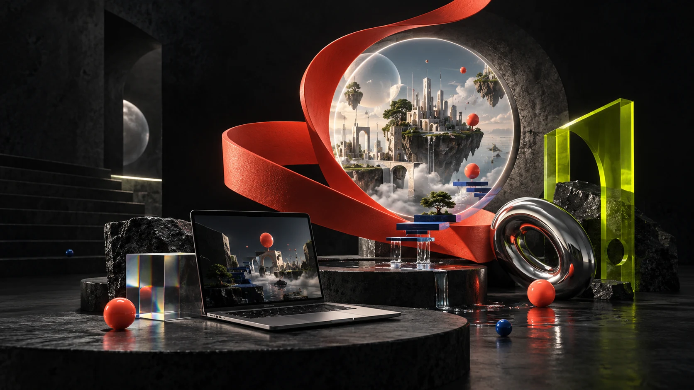
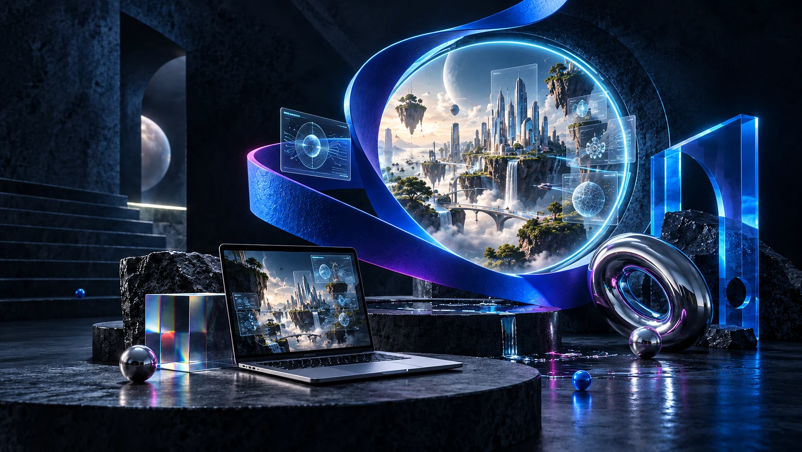

Órbita.
Entra en una escena jugable y recoge sus señales. Después imagina otra regla, otro aspecto, otra historia. Así empieza una conversación sobre lo que podrías crear.
Entrar en Órbita ↗Entra en una escena jugable y recoge sus señales. Después imagina otra regla, otro aspecto, otra historia. Así empieza una conversación sobre lo que podrías crear.
Entrar en Órbita ↗Explora un pequeño material de estudio. Acércate a sus fuentes y observa cómo cambia una respuesta cuando puedes comprobarla.
Explorar el ejemplo ↗Una página puede hacer visible un servicio. Aquí hay uno ficticio: piensa qué te permite entender y qué necesitarías saber para confiar.
Ver la propuesta ficticia ↗Demostraciones preparadas con ayuda de IA, con datos ficticios. No son trabajos ni testimonios de alumnos. Puedes abrirlas sin suscribirte a otra herramienta.

